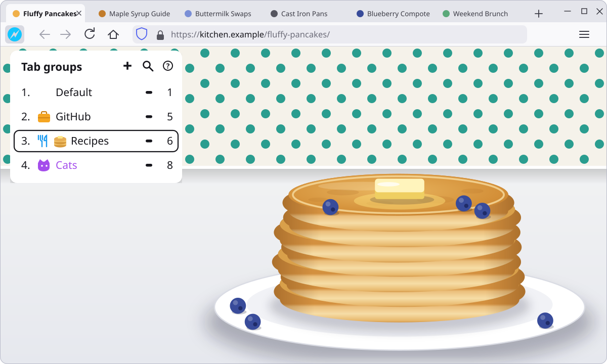

Tab groups, one keystroke away.
A lightweight Firefox tab group manager. Switch between tab groups and search your tabs using only the keyboard. No mouse, no hunting through a crowded tab strip.

Your hands stay on the keys.
Open the popup with CtrlG, pick a group, press Enter. Everything else, from moving tabs to closing a whole group, is a shortcut too.
- 01
Open the popup with a keystroke
Press CtrlG anywhere to open the add-on popup. Every shortcut below works the moment it opens, no click needed first.
- 02
Switch with the keyboard
Jump straight to a group with 1–9 or a–z.
- 03
Colored mnemonics
Give each group a color. The add-on's toolbar icon takes the color of the active group and the first letter of its name, so you always know which group you are in.
- 04
Emoji mnemonics
Start a group's name with an emoji. It replaces the add-on's toolbar icon while that group is active, so the current group is clear at a glance.
- 05
Close or reload a whole group
CtrlDelete closes every tab in the selected group; / reloads them. Closed one by mistake? CtrlZ brings it back.
- 06
Copy groups between browsers
Copy a group to the clipboard with PageUp and paste it into another Firefox with PageDown.
- 07
Search tabs from the keyboard
Press = to search your tabs and find the one you want without touching the mouse.
Ten colors, ten shortcuts.
Pick a color in the group editor. The number on the strip is the key you'll press to select it.
See it in action.
Switching groups and search, all from the keyboard.
Everything is a key.
Every command in the popup has a key. Here is the full list.